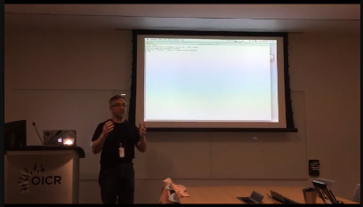

Giving a Tech Talk That Doesn’t Suck
2025-07-20
Why Should You Listen to Me?
- Author or editor of sixteen technical books (and two for children)
- Award-winning teacher (roughly 3000 hours of lecturing)
- I’ve made mistakes so you don’t have to
- Lectured to the wrong class (once)
- Fallen off stage while lecturing (twice)
- Fallen asleep in one of my own lectures
- And then there’s https://youtu.be/-ApVt04rB4U

Who Are You Speaking To?
- Write down who you’re speaking to
- Otherwise you’ll wind up speaking to yourself
Organizational Change for Open Science
- Sabina, 28, has a master’s degree in animal physiology and now works as a data analyst for a mid-sized pharmaceutical company.
- Sabina takes open access publishing and open source software for granted, but has never been involved in politics or advocacy beyond signing a few online petitions.
- Sabina’s company doesn’t have a policy on contributing to open source projects, but her department head grumbles about “all this diversity stuff” distracting people from “real work”.
- Sabina doesn’t mind public speaking, but finds face-to-face conflict very stressful.
What Does Your Talk Change?
- Also write down what change you want to cause in your audience
- Not “what will they know?” but “what will they do?”
- Work backward from the latter to the former
Organizational Change for Open Science
This workshop gives Sabina a vocabulary for organizational change so that she can think and talk about it more clearly, while the exercises help her figure out what changes she wants and how to achieve them.
What Story Should You Tell?
- Retrace your own learning journey (challenge/response)
- Solve a problem (detective story)
- How to (like this talk)
- Build toward epiphany
- But bottom-up is hard (delayed gratification)
- A catalog of curiosities
Which of the five patterns above does this talk follow?
Is It a Story?
- “And then” is weak
- “But” and “therefore” are strong
What Are You Going to Ask?
- Most people design talks in terms of what they want to say
- Equally useful to think of what you’re going to ask
- During the talk
- At the end
- Reverse instructional design
- Helps keep the audience engaged
- Lets you check for understanding
- Helps you trim unneeded material
- How often have you sat through a talk where everyone in the audience already knew what the speaker was presenting?
- Did you notice when the speaker hit material that you didn’t already know?
How Do You Choose What To Say?
- Rough notes (as plain text) first
- Too many people spend too much time optimizing things they then throw away
- I’m very fond of concept maps as well
When Are You Done?
- “Lessons are never finished: they are just delivered.”
- Practice out loud
- Doing everything you plan to do (e.g., live coding)
- Get feedback from a friend
- Unless you’re comfortable seeing/hearing yourself
No lesson survives first contact with its audience.
— Robert Wilson
How Do You Deliver the Talk?
- Amplify yourself
- If you are naturally outgoing, be exuberant
- If you are naturally thoughtful, be laid back
- I’m a terrible graphic designer, so I deliberately stick to mostly-text slides
- Everyone talks faster in front of an audience (adrenaline)
- Adjust to the size of the room
- Acoustic cafe vs. stadium rock
- A glass of water can save your career (or your marriage)
- What two adjectives would people who know you well use to describe you?
- How can you use these on stage?
What Shouldn’t You Do?
- Talk to your laptop
- Read your slides aloud
- Spend more than two sentences on who you are
- Put more than seven things on any slide
- Talk to just one person in the front row
- Lose track of time
- Lose control of your audience
How Do You Fail Gracefully?
- No network access
- “Installing update…”
- Under/over-estimated your audience
- Or worse, their interest
- “That guy”
- Show up early to test things
- Give the next speaker time and space to do this
- How do you handle someone who really wishes he was giving the talk instead of you?
- What do you do if your demo just doesn’t work?
Where Do You Start?
- A little-known or counter-intuitive fact (also called a hook)
- A story of personal failure
- A sympathetic audience is more likely to listen
- An audience poll
- Follow up with questions to specific people
- Specifically, those who are still talking
How Do You Finish?
- A call to action (“submit your pull requests here!”)
- A pointer to further / deeper resources
- A memorable story (poignant, funny, or angry)
- Plan to end a few minutes early
What Tools Can You Use?
- Search engines are your friend
- You are probably not the first person to talk about this
- Accessibility auditing tools
- Everything that helps people with challenges helps everyone else
- Record yourself
- If athletes and musicians can do it, so can you
- The discomfort fades…eventually
- Use genAI to review, not to create
- Good at spotting contradictions and omissions
- Which inevitably creep in as you revise
Thank You

start where you are · use what you have · help who you can